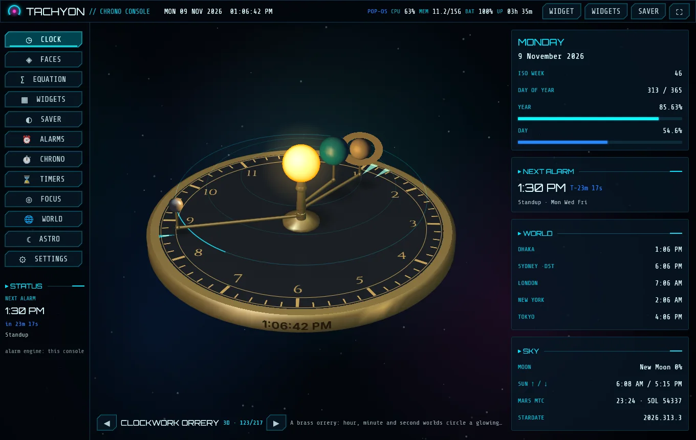
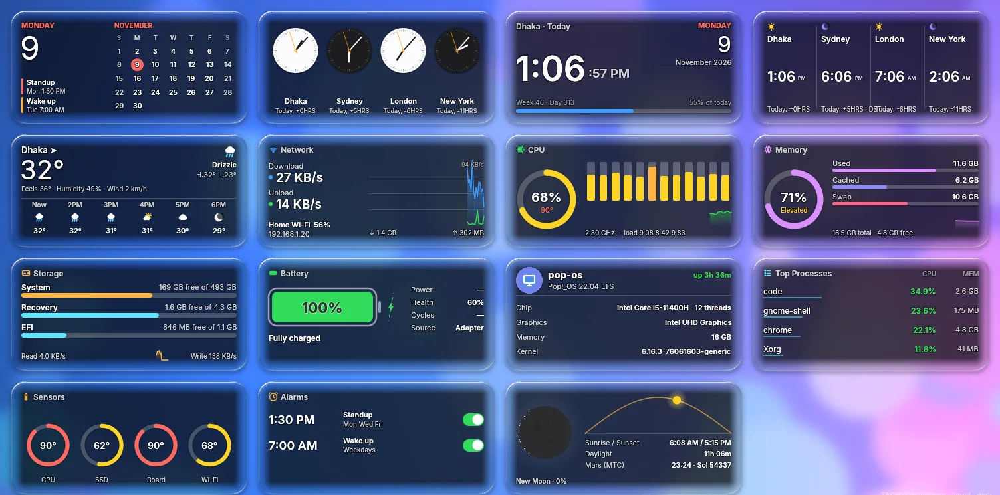
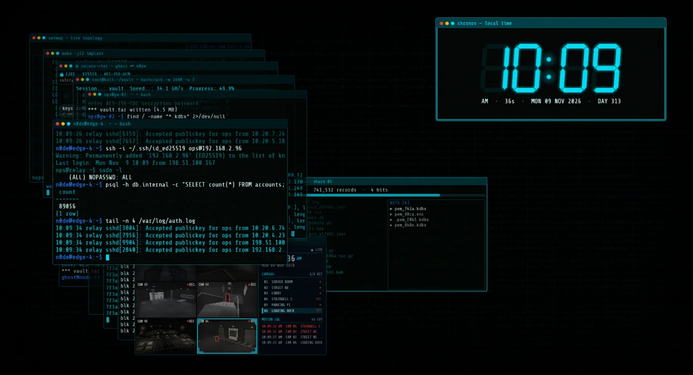
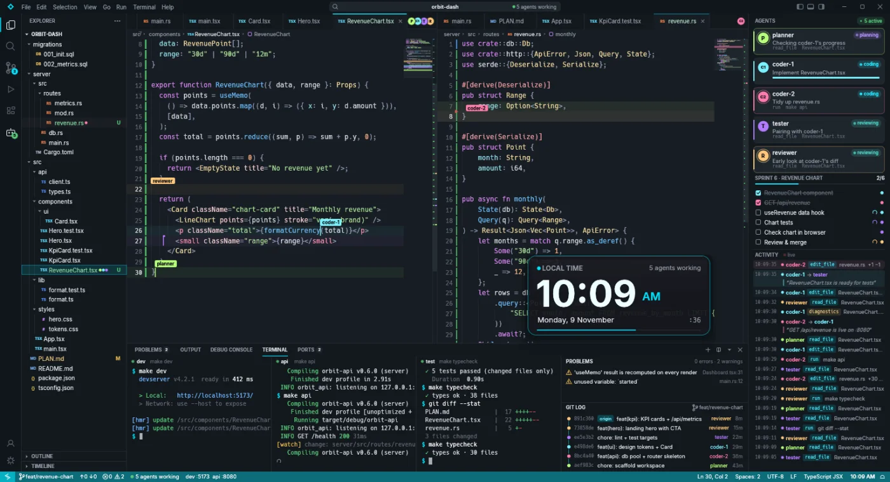
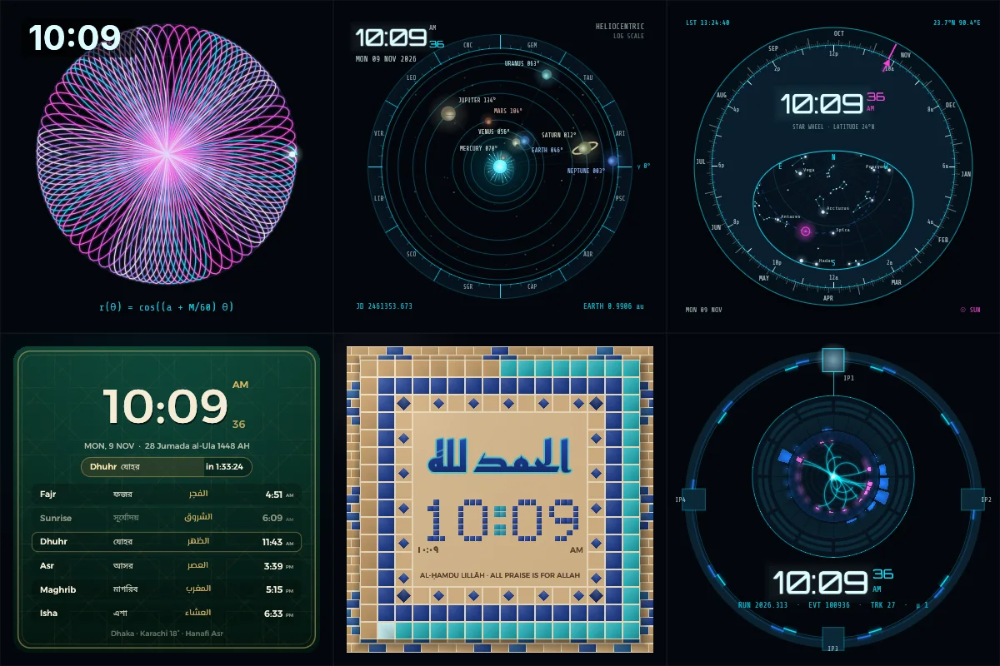

Your desktop deserves a better clock.
TACHYON is a clock console, desktop widgets and a full-screen screensaver with 217 animated faces, from railway watches and tourbillons to black holes and live terminals.
curl -fsSL https://soab42.github.io/tachyon-app/install.sh | shNo root, no account. Linux x86-64 on X11. What it needs
217 faces. All of them move.
Every face runs at any size, from a 120-pixel widget to a full-screen saver, and follows your colour theme.

A real clock app, not just a pretty one.
- Alarms with snooze, seven tones and wake missions you have to solve
- Centisecond stopwatch with laps, and any number of timers
- Pomodoro focus sessions and a sleep-cycle planner
- World clocks that follow daylight saving, plus a meeting planner
- Moon phase, sunrise and sunset, even Mars time

Glass widgets for a desktop that has none.
- Calendar, weather, network, CPU, memory, storage, battery and more
- Liquid Glass, Frost, Shape and Card styles, blurring your real wallpaper
- Any clock face can be a widget, in any size or shape
- Lock mode: widgets ignore the mouse and clicks pass straight through

Walk away and it puts on a show.
- Any face, full screen, on every monitor
- Hacker mode: up to 30 simulated terminals stacking up, all fictional
- Random mode mixes everything, different on each monitor
- Optional lock screen that asks for your system password

Five agents build an app while you're at lunch.
- A planner, two coders, a tester and a reviewer typing with their own cursors
- Terminals run the dev server and the tests
- A browser opens, finds an error, and an agent fixes it
- It's all a simulation, so your real code stays untouched

Some of these are actually working instruments.
- Equation Lab: type an equation and watch it become a pattern
- An orrery with today's planet positions and a planisphere turned by sidereal time
- Prayer times for your location, Qibla and Hijri date
- A btop-style monitor with your real system stats
One line. Then it looks after itself.
curl -fsSL https://soab42.github.io/tachyon-app/install.sh | sh- Run the command. It installs for your user only, in ~/.local/bin, and checks the download.
- Open TACHYON from your applications menu and pick a face.
- Updates come to you. A popup offers each new version. Every update is signed and checked before it replaces anything.
Prefer to look first? Read the script or download the release.
- System
- Linux on 64-bit Intel or AMD, with glibc 2.35 or newer (Ubuntu 22.04 or later)
- Session
- X11. Wayland sessions aren't supported yet.
- Built and tested on
- Pop!_OS 22.04 with GNOME
- Size
- About 15 MB to download
- Price
- Free
Good to know
What does it send over the internet?
No analytics and no account. It asks GitHub for new versions every 6 hours, which you can turn off in Settings. The weather widget sends your location to Open-Meteo, and the optional "Detect via internet" location button calls ipinfo.io.
What runs in the background?
A small service handles alarms, starts the screensaver when you're idle and checks for updates. It starts when you log in. The installer starts it right away, so the screensaver can appear after 4 idle minutes. You can change or disable that in the console.
How do updates work?
When a new version is out you get a popup with what changed and three choices: Update now, Later or Skip this version. Each release is cryptographically signed, and nothing is replaced until the signature, checksum and a test run all pass.
Is it available for macOS or Windows?
Not at the moment. TACHYON is Linux only.
How do I remove it?
~/.local/bin/tachyon uninstall pkill -x tachyon rm ~/.local/bin/tachyon rm -rf ~/.config/tachyon ~/.local/share/tachyon
Found a bug?
Please open an issue on GitHub.